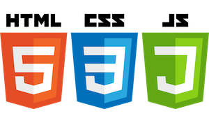

CTEC3905
Front-End Web Development

Dave Everitt: deveritt@dmu.ac.uk
Fania Raczinski: fania.raczinski@dmu.ac.uk
Overview
- very popular module with limited spaces
- covers three languages (plus markdown and git) at intermediate/advanced level
- no prerequisistes BUT:
- rapidly-evolving field so the module is intensive
- fast-paced and requires commitment
- interim deadlines early on, no latecomers so sign up now!
Deadlines
- one assignment 100% individual coursework
- deadline near the end before Winter break
- there will be some interim submissions
- GitHub repo with readme file and design sketches 10%
- Live GitHub pages of basic skeleton code 10%
- final website 80%
Module structure
- 2 hour labs with exercises on GitHub
- 2 hour lectures, HTML and PDF slides, recorded
Learning outcomes
- Use GIT and GitHub for version control and code storage
- Demonstrate a critical understanding of Information Architecture, user interface design, usability principles and semantic markup
- Demonstrate evidence of a detailed understanding of all three current front-end web technologies, their use and context
- Create a fully standards-compliant, responsive and accessible website or web-technology-based application
This module !==
Your prior knowledge may be wrong or redundant!
- NO Bootstrap/JQuery or CMS (e.g. Wordpress)
- NO YouTube tutorials or templates
- NO JavaScript frameworks but can guide you
- NO Node or server-side content
- NO inline styles or scripts!
- NO vendor prefixes (nobody cares about IE anymore)
Vocabulary matters
- HTML5
!==XHTML! - JavaScript
!==Java! - GIT
!==GitHub! - tag
!==attribute
Code specifics
- JavaScript ES6 programming
- CSS3 animations and advanced use e.g. flexbox, columns
- HTML5 semantic structure
- semantic tags vs divs with similarly-named classes
- JSON data and data APIs
- mobile-first responsive design
- optional information on progressive web apps
General points
- industry best practices against “what my mate does”
- keeping code DRY e.g. really understanding CSS
- code formatting (commenting, indentation: 2 spaces!)
- web accessibility principles
- wireframes, testing
What is required
- build on lab examples not blind copying
- demonstrate a proper understanding of the code
- key programming skills
- terminal
- programmers’ text editor
- file system, naming
- GIT version control, project on GitHub/GitHub pages
- specific references to any adapted source code
(MDN, W3Schools, CodePen, JSFiddle, etc.)
Learning materials
- public GitHub organisation has all module code
- UDL-friendly:
- various formats (HTML, PDF)
- source code and slides on GitHUb
- selected supplementary learning references
- dream team of lecturers :-)
Questions?